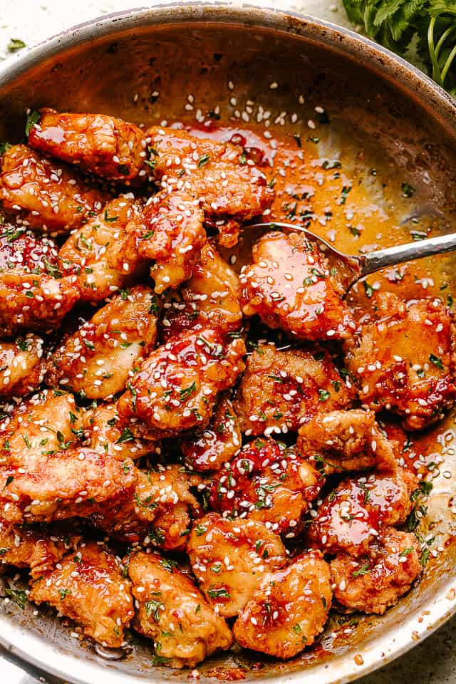

Sesame Chicken Recipe
Navigate

Recipe Description
Perfectly crispy chicken tossed in an aromatic, sweetly
savory honey sesame sauce. This dish has flavor that beats the
take-out restaurants'! For a healthier alternative, the chicken
can be lightly stir-fried or the frying can be skipped entirely.
As for the honey sauce, it can be made 2 days in advance.
Chicken Ingredients
- 1 1/2 lbs boneless skinless chicken breasts cut into 1-inch pieces
- 2 eggs beaten
- salt and pepper to taste
- 1/2 cup all purpose flour
- 1/2 cup cornstarch
- oil for frying
Sauce Ingredients
- 1 teaspoon vegetable oil
- 1 teaspoon minced fresh garlic
- 1/4 cup honey
- 1/4 cup soy sauce (reduced sodium if possible)
- 2 tablespoons ketchup
- 3 tablespoons brown sugar
- 2 tablespoons rice vinegar
- 1 tablespoon toasted sesame oil
- 2 teaspoons cornstarch
- 2 tablespoons sesame seeds
- 2 tablespoons sliced green onions
Steps
- Place the eggs, salt and pepper in a bowl. Stir to combine.
- Place the flour and 1/2 cup of cornstarch in a shallow bowl or on a plate. Stir to combine.
- Dip each piece of chicken into the egg mixture, then into the flour. Repeat the process with all of the chicken.
- Heat 3 inches of oil in a deep pan to 350 degrees F.
- Add 7-8 pieces of chicken to the pan. Cook for 5 minutes or until crispy and golden brown. Repeat the process with the remaining chicken.
- Drain the chicken on paper towels.
- While the chicken is cooking, combine the honey, soy sauce, ketchup, brown sugar, rice vinegar, sesame oil, and 2 teaspoons of cornstarch in a bowl.
- Heat the teaspoon of oil in a large pan over medium heat. Add the garlic and cook for 30 seconds. Add the honey sauce mixture and bring to a simmer. Cook for 3-4 minutes or until just thickened.
- Add the crispy chicken to the pan and toss to coat with the sauce. Sprinkle with sesame seeds and green onions, then serve.